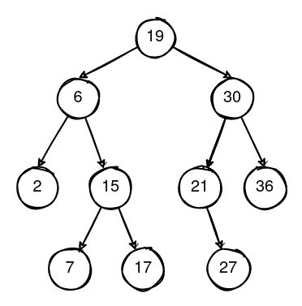
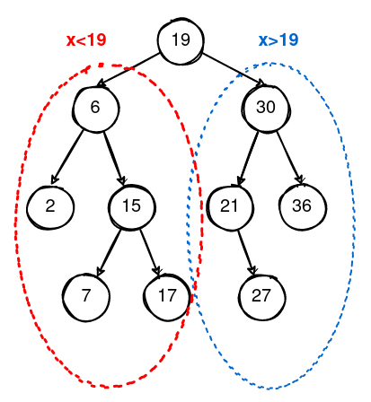
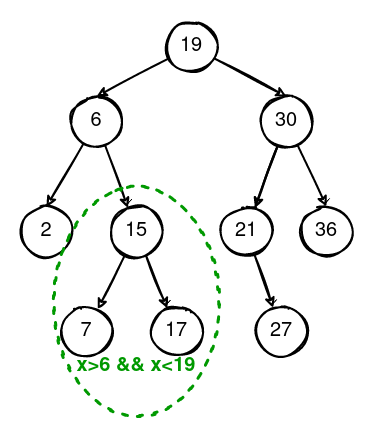
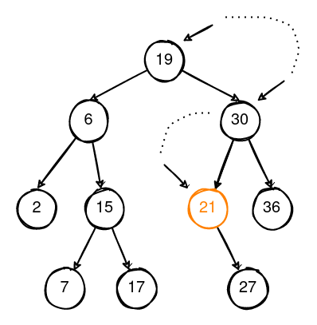
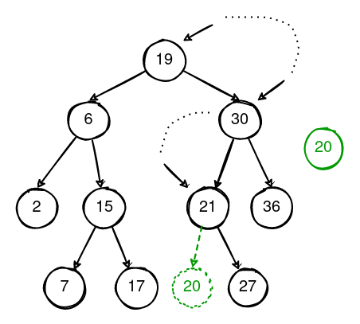
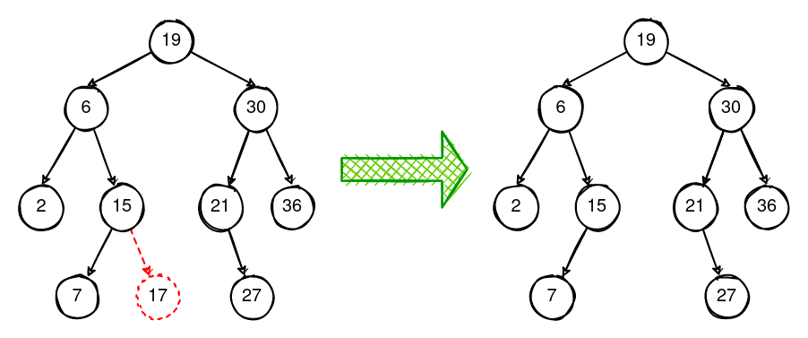
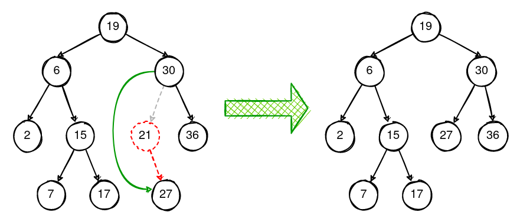
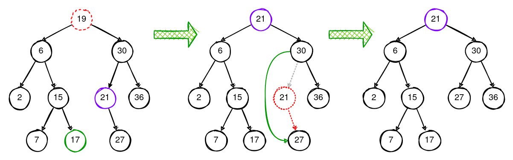

ELO320 - Estructuras de Datos y Algoritmos
Marie González-Inostroza
Un ABB es una implementación del árbol binario que permite guardar y buscar eficientemente datos

Los hijos izquierdos guardan información menor (o igual), y los hijos derechos guardan información mayor, con respecto a la de su padre.

Esto facilita la búsqueda, inserción, y eliminación de elementos. Además, los recorridos son más efectivos.
Por ejemplo, es fácil determinar el lugar y posición de los valores en un intervalo.

Las operaciones más comunes de los ABB son:
init(): Inicializar el árbol (root == NULL).size(): Cantidad de elementos en el árbol.x_preorden(): Operación x en pre-orden.x_inorden(): Operación x en in-orden. x_postorden(): Operación x en post-orden. search(): Buscar un elemento en el árbol.insert(): Insertar un elemento en el árbol.delete(): Eliminar un elemento en el árbol.clear(): Limpiar el árbol.¿Como se imprimirían los datos del siguiente árbol con recorrido pre-orden, in-orden y post-orden?

Se puede hacer de dos formas:
nodo_t * search_recursiva(nodo_t * raiz, int value) {
// Caso base
if (raiz == NULL || raiz->dato == value)
return raiz;
if (value < raiz->dato)
return search_recursiva(raiz->hijo_izq, value);
return search_recursiva(raiz->hijo_der, value);
}
nodo_t * search_puntero(nodo_t * raiz, int value) {
nodo_t *actual = raiz;
while (actual != NULL) {
if (actual->dato == value) // Caso base
return actual;
else if (value < actual->dato)
actual = actual->hijo_izq;
else
actual = actual->hijo_der; }
return NULL; // Si el bucle termina sin encontrar el valor
}
Debemos buscar el lugar donde insertar, de modo de mantener el orden de nuestro ABB.

Nota: Si nuestro árbol no acepta elementos repetidos, al encontrar el valor se detiene.
void insert(nodo_t ** raiz, int value){
}
Implementa las funciones insertar y buscar en un ABB que almacene
estructuras de tipo Mascota (con tipo y nombre).
TODOs: https://classroom.github.com/a/nhZ1Y1BBstrcmp(a, b) para comparar cadenas:< 0 si a < b= 0 si a == b> 0 si a > bAl igual que en insertar, deberemos buscar el nodo a eliminar. Pero para poder eliminarlo, tendremos que considerar los siguientes casos:
Es el caso más sencillo, solo corresponde a liberar el nodo desde el puntero del padre.

Caso intermedio. acá se elimina el nodo encontrado, pero su posición es ocupada por su único hijo. Se eleva ese sub-árbol, un nivel.

Caso recursivo o iterativo. Cuenta de dos pasos:
